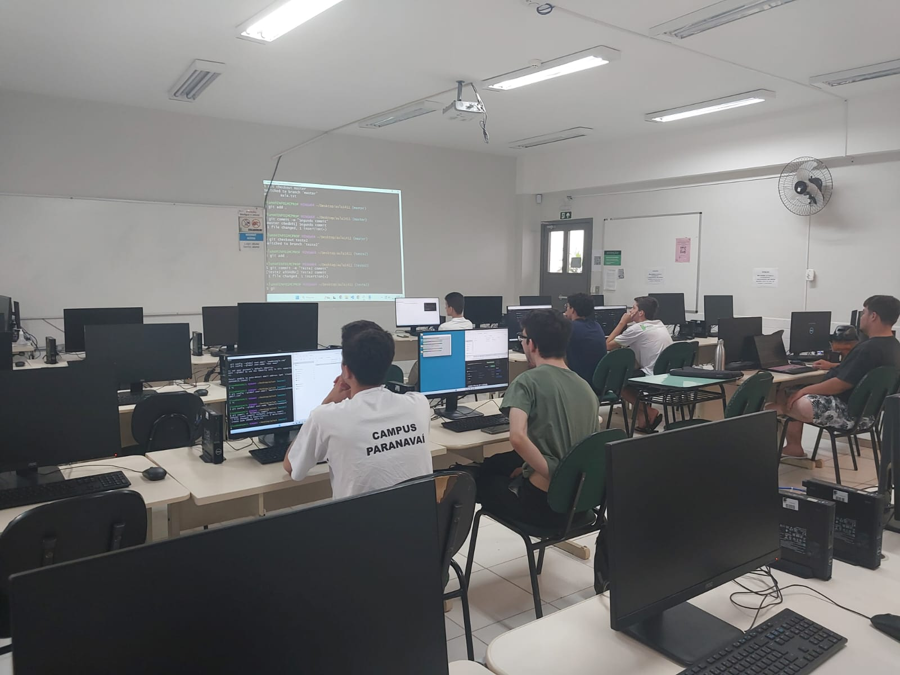
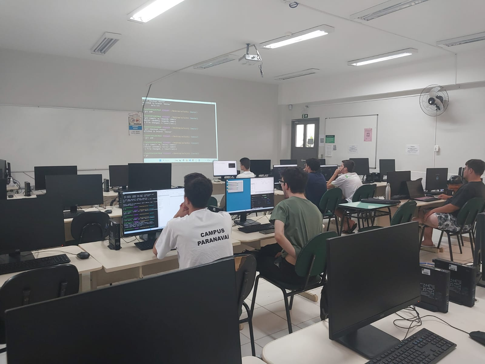

Minicurso Gerenciamento de Versionamento de Codigo com Git e Github
 

Este foi um projeto PAIPE (Programa de Apoio à Implementação de Projetos de Ensino) realizado no Instituto Federal do Paraná - Campus Paranavaí com o objetivo de capacitar estudantes do Instituto no uso do Git para controle de versões, colaboração estruturada em projetos acadêmicos e aplicação de metodologias de desenvolvimento de software.
O minicurso aconteceu com encontros quinzenais de três horas cada, onde os conceitos do Git foram aplicados de forma pratica. Houve um total de 4 encontros onde foi ensinado sobre criar repositórios, gerenciar branches, realizar merges e resolver conflitos.
No fim de tudo houve uma coleta de feedbacks dos estudantes que permitiu a criação de um inventário de melhores práticas, além de identificar áreas para melhorias. Os resultados também foram utilizados para aprimorar futuras edições do projeto e contribuir para um ciclo contínuo de melhoria.